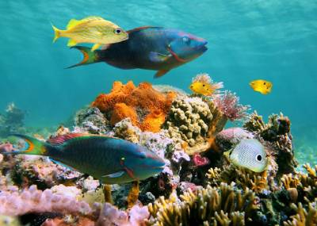
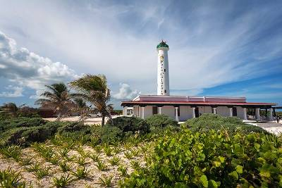
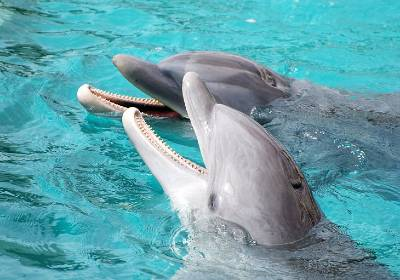
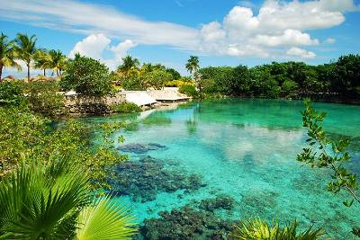
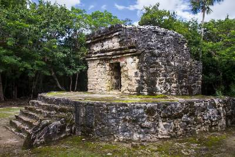

Explore the Island.
Cozumel Island Features
1. A Diver's Delight: Palancar Reef
The island is extremely popular as a destination for snorkelers and scuba divers, who are spoilt for choice when it comes to choosing which lovely reef to explore. One of the best spots to dive is the Palancar Reef, rising from depths of up to 80 meters to shallows just beneath the surface of the sea at the southwest end of the island. A popular dive includes a large bronze figure of Christ placed some 17 meters underwater. Other good diving locales are on the San Francisco, Paraíso, Columbia, and Maracaibo reefs, as well as the Santa Rosa Wall.
2. Celarain: Cozumel's Lighthouse
One of the most interesting natural attractions on Cozumel is Laguna Chankanaab, a small freshwater lake just seven kilometers south of San Miguel de Cozumel in the National Marine Park. Cut off from the sea (apart from a number of underground channels), it's a popular spot for outings thanks to its crystal-clear water and numerous colorful tropical fish, and is an enchanting place to swim, snorkel, and scuba dive.
3. Dolphin Experiences
Another top-rated attraction on the island is Dolphin Discovery Cozumel. Situated in Chankanaab National Park, the location itself is stunningly beautiful and, with its reefs, makes for an excellent place to linger and try your hand at some snorkeling or diving. A variety of dolphin experiences are offered, including some with swimming fun as they tow you through the water.
4. Laguna Chankanaab & the National Marine Park
One of the most interesting natural attractions on Cozumel is Laguna Chankanaab, a small freshwater lake just seven kilometers south of San Miguel de Cozumel in the National Marine Park. Cut off from the sea (apart from a number of underground channels), it's a popular spot for outings thanks to its crystal-clear water and numerous colorful tropical fish, and is an enchanting place to swim, snorkel, and scuba dive.
History of Cozumel
The advanced Mayan culture hit its peak from the VII century until the IX century. They considered Cozumel to be a sacred sanctuary and called it “Cuzaam Luumi” which means land or place of the swallows. They later shortened these two words to “Cuzamil”. When the Spanish arrived, the ... Click here to read the Full History!
Contact Information
📍 Scoots Reservations and Rentals
690 Wisconsin Avenue
Terminal Puerta Maya, 20814
📞 215-829-9999
✉ info@scoots.com